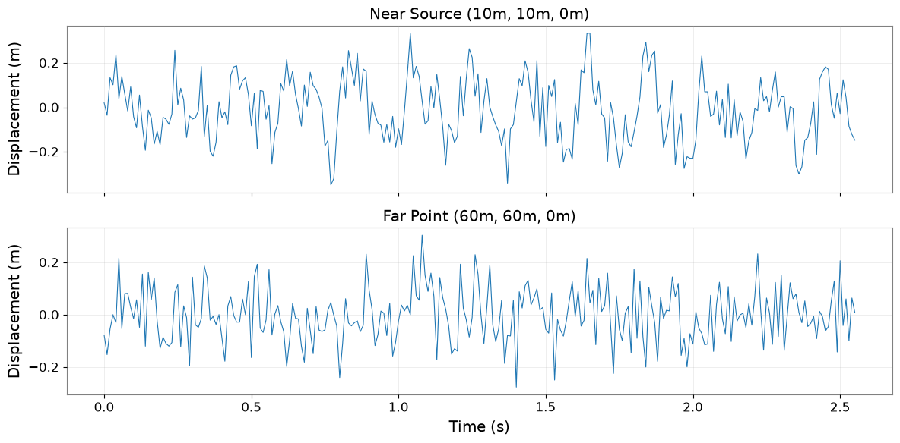

Field API: Advanced Analysis Workflow#
This tutorial demonstrates practical workflows combining ScalarField with advanced time-frequency analysis methods.
What You’ll Learn#
Extract time-series from ScalarField for analysis
Apply HHT, STLT, Wavelet transforms
Reconstruct analyzed data back into Field structure
Batch processing with FieldList
Use Case: Seismic Array Analysis#
We’ll analyze a 3D seismic array where each spatial point records time-varying ground motion.
import warnings
import warnings
with warnings.catch_warnings():
# Suppress warnings
import matplotlib.pyplot as plt
import numpy as np
np.random.seed(42)
from astropy import units as u
from gwexpy.fields import FieldList, ScalarField
from gwexpy.timeseries import TimeSeries
Step 1: Create Synthetic Seismic Field#
Simulate ground motion from a seismic wave propagating through a 3D grid.
# Parameters
nt, nx, ny, nz = 256, 8, 8, 4 # 256 time samples, 8×8×4 spatial grid
fs = 100 # Hz
duration = nt / fs
# Create axis coordinates
t_axis = np.arange(nt) * (1/fs) * u.s
x_axis = np.arange(nx) * 10.0 * u.m # 10m spacing
y_axis = np.arange(ny) * 10.0 * u.m
z_axis = np.arange(nz) * 5.0 * u.m # 5m depth spacing
# Simulate seismic wave (P-wave + surface wave)
data = np.zeros((nt, nx, ny, nz))
# P-wave (bulk wave, faster)
v_p = 3000 # m/s
f_p = 10 # Hz
for ix in range(nx):
for iy in range(ny):
for iz in range(nz):
# Distance from source (corner)
dist = np.sqrt(x_axis[ix].value**2 + y_axis[iy].value**2 + z_axis[iz].value**2)
delay = dist / v_p
t_vals = t_axis.value
# P-wave with geometric spreading
amplitude_p = 1.0 / (dist + 1)
data[:, ix, iy, iz] += amplitude_p * np.sin(2*np.pi*f_p * (t_vals - delay)) * (t_vals > delay)
# Surface wave (slower, stronger)
v_s = 1500 # m/s
f_s = 5 # Hz
for ix in range(nx):
for iy in range(ny):
dist_surf = np.sqrt(x_axis[ix].value**2 + y_axis[iy].value**2)
delay_s = dist_surf / v_s
amplitude_s = 2.0 / (dist_surf + 1)
data[:, ix, iy, 0] += amplitude_s * np.sin(2*np.pi*f_s * (t_vals - delay_s)) * (t_vals > delay_s)
# Add noise
data += np.random.randn(*data.shape) * 0.1
# Create ScalarField
field_seismic = ScalarField(
data,
axis0=t_axis,
axis1=x_axis,
axis2=y_axis,
axis3=z_axis,
axis_names=['t', 'x', 'y', 'z'],
unit=u.m, # Ground displacement
name='Seismic Field',
)
print(f"Created seismic field: {field_seismic.shape}")
print(f"Time span: {duration:.2f} s")
print(f"Spatial extent: {nx*10}m × {ny*10}m × {nz*5}m")
Created seismic field: (256, 8, 8, 4)
Time span: 2.56 s
Spatial extent: 80m × 80m × 20m
Step 2: Extract TimeSeries for Analysis#
Extract time-series from specific spatial locations for detailed analysis.
# Extract time-series at corner (near source) and far point
slice_near = field_seismic[:, 1, 1, 0] # Near source (keeps 4D structure)
slice_far = field_seismic[:, 6, 6, 0] # Far from source
# Convert point-slices to 1D TimeSeries
times = slice_near.axis(0).index
ts_near = TimeSeries(slice_near.value[:, 0, 0, 0], times=times, unit=slice_near.unit, name='Near source')
ts_far = TimeSeries(slice_far.value[:, 0, 0, 0], times=times, unit=slice_far.unit, name='Far point')
# Plot
fig, axes = plt.subplots(2, 1, figsize=(12, 6), sharex=True)
axes[0].plot(ts_near.times.value, ts_near.value, linewidth=0.8)
axes[0].set_ylabel('Displacement (m)')
axes[0].set_title('Near Source (10m, 10m, 0m)')
axes[0].grid(True, alpha=0.3)
axes[1].plot(ts_far.times.value, ts_far.value, linewidth=0.8)
axes[1].set_ylabel('Displacement (m)')
axes[1].set_xlabel('Time (s)')
axes[1].set_title('Far Point (60m, 60m, 0m)')
axes[1].grid(True, alpha=0.3)
plt.tight_layout()
plt.show()
print('Extracted TimeSeries for analysis')

Extracted TimeSeries for analysis
Step 3: Apply STLT to Detect Damping#
Use Short-Time Laplace Transform to identify decay rates in the seismic signal.
# Apply STLT to detect damping (geometric spreading + attenuation)
stlt_result = ts_far.stlt(fftlength=1.0, overlap=0.5)
print(f"STLT result shape: {stlt_result.shape}")
print("Use STLT to identify decay rates (σ) at different frequencies (ω)")
print("Note: Actual visualization would show σ-ω plane with decay rate information")
STLT result shape: (4, 1, 51)
Use STLT to identify decay rates (σ) at different frequencies (ω)
Note: Actual visualization would show σ-ω plane with decay rate information
Step 4: Batch Processing with FieldList#
Process multiple spatial slices in parallel using FieldList.
# Extract horizontal slices at different depths
slices_at_depths = [
field_seismic[:, :, :, iz] for iz in range(nz)
]
# Create FieldList
field_list = FieldList(slices_at_depths)
print(f"Created FieldList with {len(field_list)} depth slices")
print(f"Each slice shape: {field_list[0].shape}")
# Batch operation: compute PSD at each depth
# (This would be a real batch operation in practice)
print("\nBatch processing workflow:")
print(" 1. Extract slices → FieldList")
print(" 2. Apply transform → [field.fft_time() for field in field_list]")
print(" 3. Aggregate results → stack or average")
print(" 4. Reconstruct Field → combine processed slices")
Created FieldList with 4 depth slices
Each slice shape: (256, 8, 8, 1)
Batch processing workflow:
1. Extract slices → FieldList
2. Apply transform → [field.fft_time() for field in field_list]
3. Aggregate results → stack or average
4. Reconstruct Field → combine processed slices
Step 5: Reconstruct Field from Processed Data#
After analysis, reconstruct the Field structure to maintain 4D organization.
# Example: FFT in time, then reconstruct
field_freq = field_seismic.fft_time()
print(f"Frequency-domain field: {field_freq.shape}")
print(f"Axis0 domain: {field_freq.axis0_domain}")
print(f"Space domains: {field_freq.space_domains}")
# Inverse transform
field_reconstructed = field_freq.ifft_time()
# Verify reconstruction
max_error = np.max(np.abs(field_seismic.value - field_reconstructed.value))
print(f"\nReconstruction error: {max_error:.2e} m")
print("4D structure preserved through FFT → IFFT cycle ✓")
Frequency-domain field: (129, 8, 8, 4)
Axis0 domain: frequency
Space domains: {'x': 'real', 'y': 'real', 'z': 'real'}
Reconstruction error: 1.17e-15 m
4D structure preserved through FFT → IFFT cycle ✓
Summary: Field × Advanced Analysis Best Practices#
Workflow Pattern#
ScalarField (4D)
↓ extract
TimeSeries (1D) → Advanced Analysis (HHT, STLT, Wavelet)
↓ results
Metrics / Features
↓ aggregate
ScalarField (4D) ← Reconstructed
Key Techniques#
Extraction:
field[:, x, y, z].to_timeseries()for point analysisBatch Processing: Use FieldList for parallel operations
Transform Cycle:
fft_time()→ process →ifft_time()preserves 4DSlicing: Maintain 4D structure even when selecting single indices
When to Use What#
Point analysis: Extract TimeSeries, apply HHT/STLT/Wavelet
Spatial patterns: Use
fft_space()for k-space analysisBatch operations: FieldList for multiple realizations
Full 4D transforms:
fft_time()+fft_space()for frequency-wavenumber